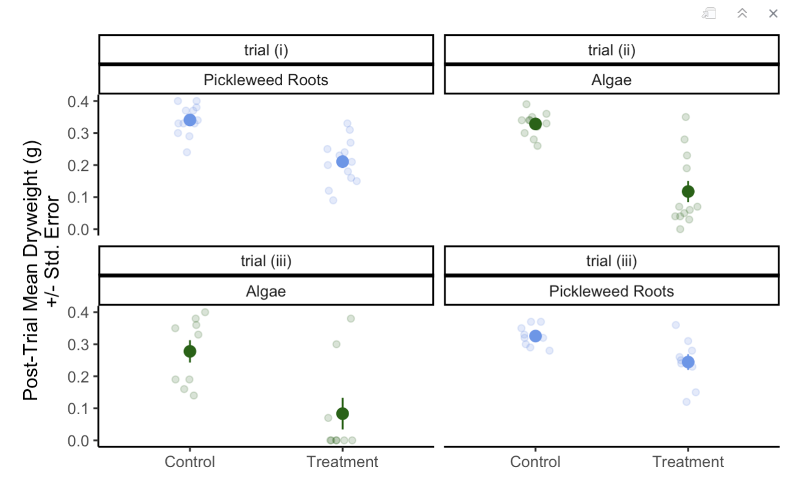

---
ggplot(data = CFT_Data, #use original dataframe
aes(x = Type, #x-axis is the dryweight of algae or pickleweed left
y = Post_Trial_Dryweight_g, # y is the type of experiment it was control or treatment (normally on the x but for a horizontal jitter this is required)
color = Tissue)) + # classify the colors of th data according
geom_jitter(width = 0.1, # change the width of the horizontal jitter
height = 0, # make the height of the horizontal jitter 0
alpha = 0.2) + # make the underlying data transparent
stat_summary(geom = "pointrange", # make the
fun.data = mean_se, # display the mean and the standard error of the data in the pointrange
size = 0.5) + #make the mean point larger to differentiate from the underlying data
facet_wrap( ~ Assigned_TTT + Tissue) + # create separate plots for each trial and each Tissue type
guides(color = "none") + # lake out the legend for the "color = Tissue" in the ggplot(aes())
theme_classic() + # choose a theme without gridlines
scale_color_manual(values=c("darkgreen", "cornflowerblue")) + # change the colors of the Tissue
labs(x = "Post-Trial Mean Dryweight (g)
+/- Std. Error",# add an x-axis title
y = "") # take out the y-axis title because we only need the tick marks to explain itEnvironmental Science
Field Study
Stats for Env Sci
Applied Ecology
Meterology
Ocean Circulation
Some of my favorite Environmental Science Courses
Field Study of California’s Coast
We visited various sites along the coast that had restoration projects and interesting physical and social geographic features.
Research project on the effects of seasonal changes in kelp forest density on beach wrack and beach productivity.
Performed native plant identification and did vegetation transect surveys.
Taught by Ian Walker

Statistics for Environmental Science
- Learned about descriptive statistics, analyzing differences between populations, hypothesis testing, regression analysis, and types of bias. We applied all these concepts in RStudio data analysis.
- I also built this website in this class!
- Taught by An Bui
- Some examples of my work in R:
An example of my data visualization from an assignment:

Organizing data from multiple linear regression models into a table:
---
rows <- tribble(~term,~null,~"model 1", ~"model 2", ~"model 3", ~"model 4",
'AIC ∆', '81.22','2.44', '60.37','32.12', '0.00',) # create a manual tribble to add the aic delta to the table
attr(rows, 'position') <- c(20)#put the new row in the 20th row of the table
# comparing models
modelsummary <- modelsummary::modelsummary( # this function takes a list of models
list(
"Null" = model0, # "model name" = model object
"Model 1" = model1,
"Model 2" = model2,
"Model 3" = model3,
"Model 4" = model4
),
add_rows = rows, #add the manually made tibble to the table
gof_map = c("r.squared", "aic"), #only include the r squared and aic in the goodness of fit stats
title = "Table 1: Linear Regression of effect of SLA, Water Treatment, and Various Plant Species on Total Biomass", #add a title
statistic = c("p= {p.value}"), # make only p value statistics added to the table
output = "flextable", #make the output table a flextable so it can be edited as one
stars = TRUE #add stars to statistically significant values
)
modelsummary %>%
autofit() %>% #make the spacing of the columns reasonable
border_inner_v() %>% #make vertical lines in between the cells
border_inner_h() %>% #make horizontal lines in between the cells
bg(i = c(1,3,5,7,9,11,13,15,17,19:21), bg = "grey") %>% #make the background of certain rows grey
bold(part = "header") # make the headers of the columns bold
Applied Ecology
- This class taught me about ecological concepts and discussed them in the context of current challenges in environmental management and conservation.
- Taught by Claudia Tyler
My Other Cool Env Sci Courses
Meteorology
Ocean Circulation